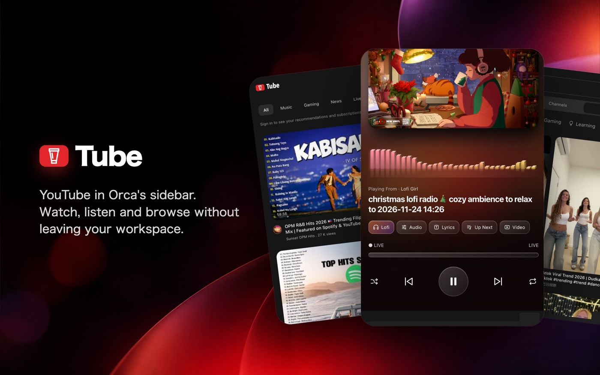

Tube
Orca の右サイドバーで YouTube。コードの隣で、見て・聴いて・探せる。YouTube in Orca's right sidebar: watch, listen and browse next to your code.
- 動画・Shorts・ライブ配信とライブチャット、字幕、PiPVideos, Shorts, live streams with chat, captions, picture-in-picture
- Lofi モード：3D ビジュアライザー付きの音楽プレーヤーLofi mode: a music player with a 3D visualizer
- YouTube アカウント連携、プレイリスト同期、ダウンロードYour account, synced playlists, downloads
- macOS / Windows / Linux、入れたらそのまま使える・11 言語macOS, Windows, Linux — works out of the box, 11 languages